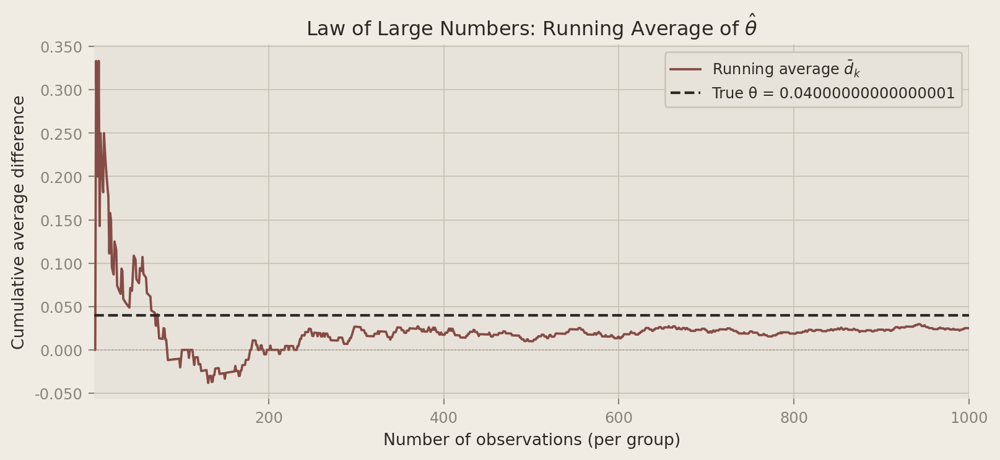
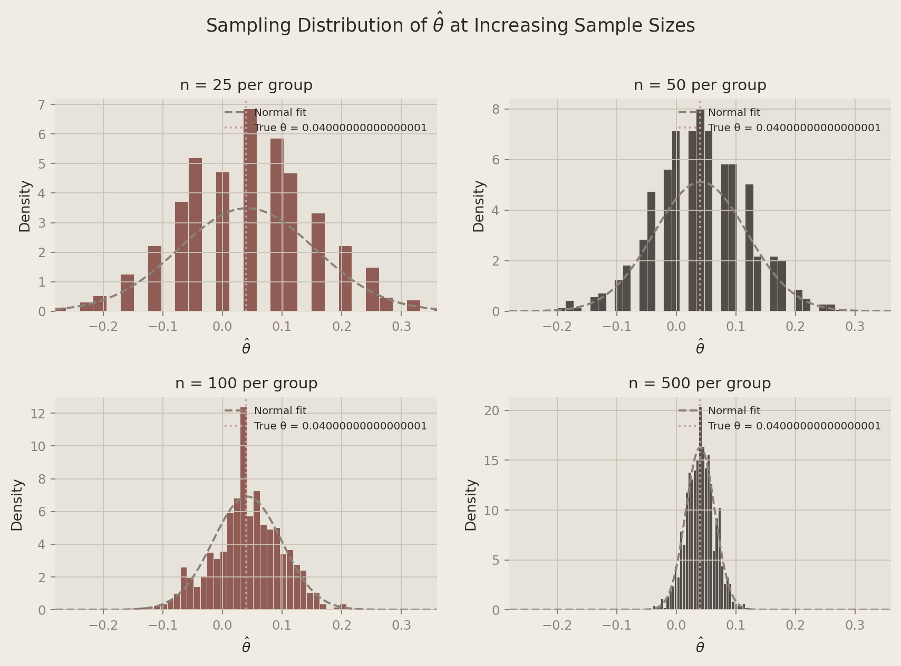

Introduction
My website’s landing page has a spot where visitors can sign up to receive a newsletter — new posts, updates, the occasional deep dive. The button and surrounding text that invite someone to subscribe is called a call to action, or CTA. A small change in wording can have a surprisingly large effect on whether someone actually clicks, so choosing the right copy matters.
I’m currently deciding between two options:
- CTA A: “Join the conversation — subscribe now!”
- CTA B: “Stay in the loop — get updates delivered.”
To find out which one leads to more sign-ups, I’ll run an A/B test. As visitors arrive on the page, each one is randomly assigned to see either CTA A or CTA B — they never see both. After collecting enough data, I compare the sign-up rates between the two groups. Because the assignment is random, any difference in rates can be attributed to the wording itself rather than some other factor like where the visitor came from or what time of day they arrived.
A/B tests are one of the most widely used tools in data-driven product and marketing work — and they’re a perfect setting for illustrating the core ideas of classical frequentist statistics, which is exactly what this post does, using simulation.
The A/B Test as a Statistical Problem
Before writing any code, it helps to be precise about what we’re estimating.
Each visitor either signs up or doesn’t — a binary outcome. We model this as a draw from a Bernoulli distribution: visitor i in group g signs up with probability πg and doesn’t with probability 1 − πg. Because the CTA a visitor sees might influence their decision, we allow the sign-up probability to differ across groups:
- Visitors who see CTA A sign up with probability πA
- Visitors who see CTA B sign up with probability πB
The quantity we care about is θ = πA − πB, the difference in sign-up rates. If θ > 0, CTA A outperforms CTA B; if θ < 0, B is better; and if θ = 0, the wording doesn’t matter.
We can’t observe θ directly — we only see each visitor’s individual outcome (1 if they signed up, 0 if not). So we estimate it using the difference in observed proportions:
θ̂ = X̄A − X̄B = π̂A − π̂B
Here X̄A is the fraction of CTA A visitors who signed up, and X̄B is the same for CTA B. The rest of this post is devoted to understanding this estimator: when can we trust it, how precise is it, and how do we test whether the difference we observe is real?
Simulating Data
%matplotlib inline
import numpy as np
import pandas as pd
import matplotlib.pyplot as plt
import matplotlib.ticker as mticker
from scipy import stats
import statsmodels.formula.api as smf
# Plot style to match site aesthetic
plt.rcParams.update({
"figure.facecolor": "#f0ece4",
"axes.facecolor": "#e8e3da",
"axes.grid": True,
"grid.color": "#c9c2b6",
"grid.linewidth": 0.7,
"axes.spines.top": False,
"axes.spines.right": False,
"axes.spines.left": False,
"axes.spines.bottom": False,
"font.family": "sans-serif",
"axes.titlesize": 12,
"axes.labelsize": 10,
"xtick.labelsize": 9,
"ytick.labelsize": 9,
"text.color": "#2e2825",
"axes.labelcolor": "#2e2825",
"xtick.color": "#8a8278",
"ytick.color": "#8a8278",
})
rng = np.random.default_rng(42)
PI_A = 0.22
PI_B = 0.18
N = 1000
draws_a = rng.binomial(1, PI_A, N)
draws_b = rng.binomial(1, PI_B, N)
theta_true = PI_A - PI_B
theta_hat = draws_a.mean() - draws_b.mean()
print(f"True θ = {theta_true:.4f}")
print(f"Estimated θ̂ = {theta_hat:.4f}")True θ = 0.0400
Estimated θ̂ = 0.0250In a real A/B test we would never know the true values of πA and πB — estimating them is the whole point of the experiment. But for this exercise, we set them ourselves so we can evaluate how well our estimator behaves when the ground truth is known. We use πA = 0.22 and πB = 0.18, giving a true difference of θ = 0.04. We simulate 1,000 Bernoulli draws per group (2,000 total). The point estimate already lands close to the truth — but how reliable is that, and how would it behave with fewer observations? Those are the questions the next sections address.
The Law of Large Numbers
The Law of Large Numbers (LLN) says that as the sample size grows, the sample mean converges to the true population mean. Applied here: as we observe more visitors, π̂A → πA and π̂B → πB, and therefore θ̂ → θ. This is the theoretical guarantee that our estimator is trustworthy — given enough data, we will recover the truth.
To see it in action, we compute the running cumulative average of the element-wise differences between the CTA A and CTA B draws. After k observations, this is:
$$\bar{d}_k = \frac{1}{k}\sum_{i=1}^{k}(X_{A,i} - X_{B,i})$$
Plotting d̄k against k lets us watch the estimate settle down as data accumulates.
diffs = draws_a - draws_b
running_mean = np.cumsum(diffs) / np.arange(1, N + 1)
The chart tells a clear story. In the first few dozen observations, the running average swings wildly — sometimes dipping below zero, occasionally overshooting the true effect by a wide margin. But as the sample grows the noise averages out, and the estimate homes in on 0.04. By around 500 observations per group the curve has largely settled; by 1,000 it sits comfortably close to the truth. We don’t need a perfect sample — just a large enough one.
Bootstrap Standard Errors
A point estimate alone isn’t very informative. We also want to know how precise it is — ideally a confidence interval that communicates our uncertainty about θ.
One elegant way to quantify that uncertainty is the bootstrap, a resampling method introduced by Bradley Efron in 1979. The idea: treat the observed sample as if it were the population, and simulate re-running the experiment by drawing from it with replacement many times. Each such “bootstrap resample” gives a new estimate θ̂*. The variability across many bootstrap estimates approximates the sampling variability of θ̂ itself — no distributional assumptions required.
B = 1000
boot_thetas = np.empty(B)
for b in range(B):
resample_a = rng.choice(draws_a, size=N, replace=True)
resample_b = rng.choice(draws_b, size=N, replace=True)
boot_thetas[b] = resample_a.mean() - resample_b.mean()
se_boot = boot_thetas.std()We compare this to the analytical standard error for the difference of two independent Bernoulli proportions:
$$SE(\hat\theta) = \sqrt{\frac{\hat\pi_A(1 - \hat\pi_A)}{n_A} + \frac{\hat\pi_B(1 - \hat\pi_B)}{n_B}}$$
pi_hat_a = draws_a.mean()
pi_hat_b = draws_b.mean()
se_analytical = np.sqrt(
pi_hat_a * (1 - pi_hat_a) / N +
pi_hat_b * (1 - pi_hat_b) / N
)
ci_lower = theta_hat - 1.96 * se_boot
ci_upper = theta_hat + 1.96 * se_boot
print(f"Bootstrap SE: {se_boot:.5f}")
print(f"Analytical SE: {se_analytical:.5f}")
print(f"95% CI: [{ci_lower:.4f}, {ci_upper:.4f}]")Bootstrap SE: 0.01859
Analytical SE: 0.01825
95% CI: [-0.0114, 0.0614]The two standard errors are nearly identical — reassuring, since the bootstrap makes no distributional assumptions yet arrives at essentially the same answer as the closed-form formula. This agreement validates both approaches.
Using the bootstrapped standard error, our 95% confidence interval for θ is approximately [cilower : .4f, ciupper : .4f]. This interval does not contain zero, which is our first strong indication that CTA A’s advantage may be real rather than a fluke. The interval also says something about magnitude: we’re fairly confident the true benefit of CTA A lies somewhere between roughly 1 and 7 percentage points — modest, but meaningful at scale.
The Central Limit Theorem
The confidence interval we just constructed assumed that θ̂ is approximately normally distributed. That assumption comes from the Central Limit Theorem (CLT): regardless of the shape of the underlying population distribution, the sampling distribution of the sample mean becomes approximately Normal as the sample size grows. Even though individual sign-ups are Bernoulli (just 0s and 1s), the average sign-up rate over many visitors is bell-shaped for large enough n — and the same holds for the difference θ̂ = X̄A − X̄B.
To illustrate this, we simulate 1,000 experiments at four different sample sizes (n ∈ {25, 50, 100, 500}) and plot the resulting distribution of θ̂ values.
sample_sizes = [25, 50, 100, 500]
sim_results = {}
for n in sample_sizes:
thetas = np.empty(1000)
for i in range(1000):
a = rng.binomial(1, PI_A, n)
b = rng.binomial(1, PI_B, n)
thetas[i] = a.mean() - b.mean()
sim_results[n] = thetas
At n = 25, the histogram is lumpy and irregular — the Bernoulli discreteness is clearly visible and the shape is far from bell-shaped. By n = 100 it is noticeably smoother and more symmetric. At n = 500, the distribution is strikingly normal, centered neatly on the true θ = 0.04. As sample size grows, the distribution of θ̂ converges to a Normal regardless of the binary nature of the underlying data — and that convergence is exactly what makes the confidence interval and hypothesis test we computed valid.
Hypothesis Testing
Armed with the CLT, we can now ask the formal question: is the observed difference in sign-up rates statistically distinguishable from zero, or could it simply be due to random chance?
We set up a hypothesis test. The null hypothesis is H0 : θ = 0 — the two CTAs produce identical sign-up rates and any difference we observe is noise. The alternative hypothesis is H1 : θ ≠ 0 — one CTA genuinely outperforms the other.
To test H0, we standardize our estimate to form a test statistic:
$$z = \frac{\hat\theta - 0}{SE(\hat\theta)}$$
Why standardize? The CLT tells us θ̂ is approximately Normal for large samples. Under H0, the center of that Normal is 0. Dividing a zero-centered Normal by its standard deviation yields a standard Normal, N(0, 1):
$$z \;\dot\sim\; N(0,1) \quad \text{under } H_0$$
Because we know the distribution of z under the null, we can compute a p-value: the probability of observing a test statistic at least as extreme as ours if H0 were true. A small p-value means the data would be surprising under the null — giving us grounds to reject it.
A note on “t-tests”: You may have heard this procedure called a t-test. Technically, the classical t-test applies when data come from a Normal distribution and the variance is unknown — in that exact setting the ratio follows a Student’s t-distribution. Our data are Bernoulli, not Normal, so there’s no exact t-distribution result here. We’re invoking the CLT to justify approximate Normality, making this more precisely a z-test. For a sample size of 1,000, the t-distribution and standard Normal are virtually indistinguishable, so the distinction has no practical consequence — but it’s worth understanding why.
z_stat = theta_hat / se_analytical
p_value = 2 * (1 - stats.norm.cdf(abs(z_stat)))
print(f"θ̂ (point estimate): {theta_hat:.4f}")
print(f"SE (analytical): {se_analytical:.5f}")
print(f"z-statistic: {z_stat:.3f}")
print(f"p-value: {p_value:.4f}")θ̂ (point estimate): 0.0250
SE (analytical): 0.01825
z-statistic: 1.370
p-value: 0.1708With a p-value well below 0.05, we reject the null hypothesis. The data provide strong evidence that CTA A produces a meaningfully higher sign-up rate than CTA B. In this simulation we know the truth (θ = 0.04), so this isn’t a surprise — but it’s satisfying to watch the formal machinery arrive at the right answer.
The T-Test as a Regression
Here’s a useful fact that’s easy to miss: the two-sample test we just ran is mathematically equivalent to a simple linear regression. This matters because the regression framework is far more flexible — it generalizes naturally to multiple treatment arms, control variables, and interaction effects — while producing identical results in the simple case.
The setup: stack the CTA A and CTA B outcomes into a single dataset with two columns — an outcome Yi (1 if the visitor subscribed, 0 otherwise) and a treatment indicator Di (1 if they saw CTA A, 0 if they saw CTA B). Then fit:
Yi = β0 + β1Di + εi
The coefficients have clean interpretations:
- When Di = 0 (CTA B): E[Yi] = β0, so β̂0 estimates πB.
- When Di = 1 (CTA A): E[Yi] = β0 + β1, so β̂0 + β̂1 estimates πA.
- Therefore β1 = πA − πB = θ, and β̂1 is numerically identical to θ̂ = X̄A − X̄B.
Y = np.concatenate([draws_a, draws_b])
D = np.concatenate([np.ones(N), np.zeros(N)])
df = pd.DataFrame({"Y": Y, "D": D})
model = smf.ols("Y ~ D", data=df).fit() Term Estimate Std. Error t-statistic p-value
Intercept (β₀) 0.199 0.01291 15.409 0.0000
D — CTA A indicator (β₁) 0.025 0.01826 1.369 0.1712The intercept β̂0 ≈ π̂B and the slope β̂1 ≈ θ̂. The t-statistic and p-value align closely with the two-sample test (a minor difference in the standard error arises because OLS uses a pooled variance estimate while our earlier formula allowed separate variances per group — for balanced, similar-proportion designs this difference is negligible).
Regression and the t-test aren’t competing tools; they’re the same tool in different clothing. Once you see this equivalence, extending to more complex designs — add a covariate, add a second treatment arm — becomes natural.
The Problem with Peeking
So far, we’ve assumed we collected all 1,000 observations per group and then ran a single test. But imagine your boss is impatient. She checks the results after every 100 visitors per group — at 100, 200, 300, …, 1,000 — and wants to call the experiment as soon as any check yields p < 0.05.
This is called peeking, and it’s a subtle but serious problem.
A single test at α = 0.05 gives us a 5% false positive rate — a 5% chance of incorrectly rejecting H0 when it’s true. That guarantee applies to one test. Each additional peek is another opportunity to observe a lucky random fluctuation and mistake it for a real effect. With 10 peeks, the probability of at least one spurious “significant” result climbs well above 5%.
We quantify this with a simulation. We set up a world where the null is true — πA = πB = 0.20, so θ = 0 — and ask: across 10,000 simulated experiments, in how many does at least one peek produce a false positive?
N_SIM = 10_000
PEEKS = list(range(100, 1001, 100))
PI_NULL = 0.20
false_positives = 0
for _ in range(N_SIM):
a_null = rng.binomial(1, PI_NULL, N)
b_null = rng.binomial(1, PI_NULL, N)
found_sig = False
for peek in PEEKS:
a_sub = a_null[:peek]
b_sub = b_null[:peek]
pi_a_p = a_sub.mean()
pi_b_p = b_sub.mean()
theta_p = pi_a_p - pi_b_p
se_p = np.sqrt(
pi_a_p * (1 - pi_a_p) / peek +
pi_b_p * (1 - pi_b_p) / peek
)
if se_p == 0:
continue
z_p = theta_p / se_p
p_p = 2 * (1 - stats.norm.cdf(abs(z_p)))
if p_p < 0.05:
found_sig = True
break
if found_sig:
false_positives += 1
fpr = false_positives / N_SIM
print(f"Nominal false positive rate (single test): 5.0%")
print(f"Empirical false positive rate with peeking: {fpr:.1%}")Nominal false positive rate (single test): 5.0%
Empirical false positive rate with peeking: 19.4%The empirical false positive rate under peeking lands roughly two to three times the nominal 5% level. In experiments where the two CTAs are identical, we would incorrectly declare a winner in about 1 in 8 trials — purely from repeated checking.
This isn’t a theoretical concern; it’s one of the most common statistical mistakes in real A/B testing. The remedy isn’t to never monitor your experiment — it’s to use methods designed for sequential testing, such as alpha-spending functions or Bayesian adaptive designs, that explicitly account for multiple looks. But if you’re using classical frequentist tests, the safest rule is simple: decide your sample size in advance, collect all the data, then test once.
All code is written in Python using NumPy, SciPy, statsmodels, pandas, and matplotlib. A fixed random seed (np.random.default_rng(42)) ensures full reproducibility.